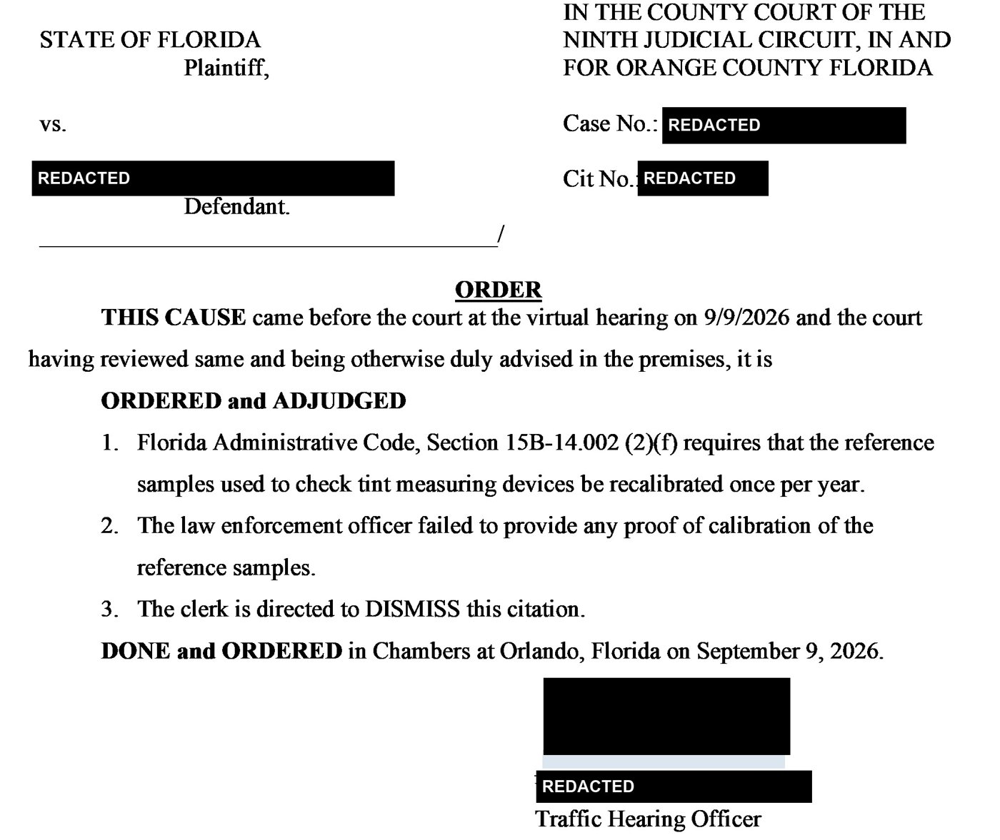

Tint Ticket Dismissed: The Meter Calibration Rule in Florida
The tint meter is only as good as the reference sample used to check it, and Florida requires that sample to be recalibrated every year.
Published on by Attorney Jeff Lotter
The officer presses a meter against your window, reads a number, and writes the ticket. Most people assume that number ends the discussion. On September 9, 2026, in an Orange County traffic hearing, it didn't, because the officer couldn't prove the equipment behind the number had been calibrated.
Scroll ↓
Tint Tickets in Orange County, by the Numbers
4,495
tint tickets filed in 2025
4,443
already filed in 2026, through October 4
6 in 10
are for the windshield, not the side windows
With nearly three months left, 2026 is about to pass all of 2025. The Orange County Sheriff's Office alone has written 2,256 tint tickets this year, more than its 2,001 for all of last year.
Window tint tickets filed in Orange County, by year
2026 is partial, through October 4
View as table
| Year | Tint tickets filed |
|---|---|
| 2024 | 4,491 |
| 2025 | 4,495 |
| 2026 (through Oct 4) | 4,443 |
Want to see what's being filed in Orange County every week? Follow the numbers at The Lotter Blotter.
Florida's Window Tint Limits
Florida measures tint by light transmittance, the percentage of visible light that passes through the glass. The lower the number, the darker the tint. The limits are:
- Front side windows: at least 28% light transmittance, and no more than 25% reflectance (F.S. 316.2953).
- Rear side windows and back window: at least 15%, or at least 6% on "multipurpose passenger vehicles," meaning vehicles built on a truck chassis or with off-road features, such as many SUVs and pickups (F.S. 316.2951(2); F.S. 316.2954).
- Tolerance: every percentage measurement is subject to a tolerance of plus or minus 3% (F.S. 316.2955(2)).
Swipe to see the full diagram →
That difference matters. Windshield tickets, the most common kind, turn on where the tint is, not how dark it is. The calibration issue below matters most for side and rear window tickets, where the meter reading is the State's evidence.
A tint violation is a noncriminal traffic infraction, punished as a nonmoving violation under Chapter 318. That means a fine, not points. It still goes on your driving record, and it is still worth contesting when the State's proof is weak.
Why the Meter Reading Carries So Much Weight
Florida law gives the officer's meter a head start. Under F.S. 316.2955(3), a reading from an approved light transmittance measuring device is presumed accurate and is admissible at trial. In practice, the officer testifies to the number and the State rests.
I carried and used tint meters as a Florida Highway Patrol trooper and as a deputy sheriff. On the roadside, the reading is what everyone pays attention to. In court, what matters is whether the device behind it met the rules.
The key word is approved. The Department of Highway Safety and Motor Vehicles sets the standards those devices must meet in Florida Administrative Code Rule 15B-14.002. Among other things, every meter must come with a reference sample, a piece of glass or plastic with a known light transmittance. The officer checks the meter against that sample to confirm it reads correctly.
The rule that decided this case
Rule 15B-14.002(2)(f): "Reference samples shall be recalibrated at least once per year by a qualified laboratory."
The logic is simple. If the reference sample has drifted, checking the meter against it proves nothing. A meter that "passes" against an uncalibrated sample can still be off, and on a window sitting near the 28% line, a few points decide whether there was a violation at all.
How a tint meter reading gets into evidence
-
Step 1
Approved meter
The device must meet the State's standards (Rule 15B-14.002).
-
Step 2
Reference sample
The officer checks the meter against a sample with a known reading.
-
Step 3: where our case turned
Yearly lab recalibration
The sample must be recalibrated at least once a year by a qualified lab (Rule 15B-14.002(2)(f)).
-
Step 4
Reading presumed accurate
Only then does the law presume the reading is accurate (F.S. 316.2955(3)).
Break any link and the presumption falls away. No proof of calibration means the reading can be challenged, and without the reading there may be no evidence of how dark the windows were.
What Happened at the Hearing
Tint tickets often come with another violation. When they do, the tint citation is frequently dropped as part of resolving the bigger one. That's what we expected here.
Our client was stopped by a Florida Highway Patrol trooper in Orange County and cited for speeding and window tint. The speed case was solid, and we resolved it with a plea. We asked the trooper to drop the tint citation as part of that resolution. She refused.
So we requested a hearing on the tint citation and moved to exclude the tint meter reading, because the State had no proof that the meter's reference samples had been calibrated as the rule requires. Without the reading, there was no evidence of how dark the windows actually were.
The trooper wasn't familiar with the calibration rule. Neither was the hearing officer, an experienced traffic hearing officer who had never seen this challenge raised. He researched the rule before ruling. At the virtual hearing on September 9, 2026, he found that Rule 15B-14.002(2)(f) requires annual recalibration of the reference samples, found that the officer "failed to provide any proof of calibration of the reference samples," and directed the clerk to dismiss the citation.

Every case is different. This is one hearing officer's ruling on one set of facts. It is not binding on other courts, and it doesn't guarantee the same outcome in your case. It shows why the State has to prove its equipment, not just read a number from it.
Got a Tint Ticket? What to Do Next
1. Don't pay it on autopilot
Paying a civil traffic infraction in Florida counts as admitting it and waiving your right to a hearing (F.S. 318.14(4)(b)). Once you pay, the calibration question never gets asked.
2. Ask for the equipment records
The questions that matter at a tint hearing are about the device, not the driver:
- What make and model of meter was used, and is it an approved device?
- Was the meter checked against its reference sample before the reading?
- When was that reference sample last recalibrated, and by what laboratory?
- Does the reading clear the legal limit once the 3% tolerance is applied?
3. Check your door jamb
Florida requires tint installers to put a compliance label on the inside of the driver's door jamb (F.S. 316.2955(1)). If your tint was professionally installed, that label and your receipt are worth bringing.
4. Elect a hearing
You have a limited window after the citation to pay or request a hearing. If you're not sure what to expect, read our guide to your first traffic court hearing in Florida.
The Bigger Point: Make the State Prove Its Equipment
Normally, getting a scientific measurement into evidence takes real work: someone has to explain how the instrument works and why its result is reliable. For a few devices officers use every day, Florida law gives the State a shortened predicate. Use an approved device, maintain it the way the rules require, and the reading comes in without an expert.
That shortcut has a price: the State has to show it followed the rules. Tint meters, radar and laser speed devices, and breath-test machines all work this way. When the maintenance and calibration records aren't there, the shortcut isn't available, and the reading can be kept out. We've used the same approach in a super speeder case dismissed for lack of a radar foundation and in our work challenging Florida's breath-test machine.
Most drivers pay a tint ticket because it seems too small to fight. That's exactly why the calibration requirement goes unchallenged, and why the people enforcing it may not know it exists.
Sources
- F.S. 316.2951(2): definition of "multipurpose passenger vehicle"
- F.S. 316.2952(2)(b): windshield: tint only along a strip at the top, above the AS-1 line
- F.S. 316.2953: front side windows: at least 28% light transmittance, no more than 25% reflectance; nonmoving violation
- F.S. 316.2954(1)(a): windows behind the driver: at least 15%, or 6% on multipurpose passenger vehicles
- F.S. 316.2955: (1) installer label in the door jamb; (2) plus or minus 3% tolerance; (3) approved-device reading presumed accurate
- F.S. 316.2956: operating a vehicle with noncompliant tint is a noncriminal infraction
- F.S. 318.14(4)(b): paying the civil penalty admits the infraction and waives the hearing
- Fla. Admin. Code R. 15B-14.002(2)(f): reference samples must be recalibrated at least once per year by a qualified laboratory
Got a Traffic Citation?
Even minor traffic violations can lead to bigger legal problems. Protect your record with experienced representation.
Learn About Traffic Defense →Jeff Lotter
Criminal Defense Attorney | Former State Trooper
Jeff Lotter is an Orlando criminal defense attorney and former Florida Highway Patrol trooper. He uses his law enforcement background to build stronger defenses for clients facing criminal charges.
Need Legal Help?
If you're facing criminal charges in Central Florida, an experienced defense attorney can make the difference. Get a free consultation to discuss your case.
Contact Lotter Law at 407-500-7000 for a free consultation.
Related Articles
Cited for Window Tint?
Don't pay the ticket without understanding your options. If the State can't prove its tint meter was properly calibrated, you may be able to get the citation dismissed.
Free Consultation | Traffic Ticket Defense | Results-Focused Representation
Law Office of Jeff Lotter PLLC
Serving Orlando, Orange County, and Central Florida